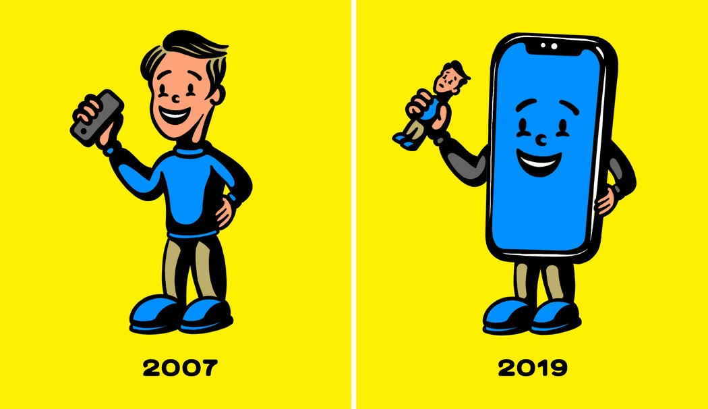

智能手机是我们忠实的伴侣。对于我们中的很多人来说，它亮着光的屏幕无处不在，无休止地转移我们的注意力，比如那些温暖的提示音，代表着社交认可，以喜欢和转发的形式送达，还有最新的“突发”新闻或争论中被算法放大的愤怒。一醒来，它们就在我们手中，博得我们的注意，直到入睡前的最后时刻。
史蒂夫·乔布斯(Steve Jobs)不会赞成。
2007年，乔布斯在旧金山莫斯克尼会议中心(Moscone Convention Center)登台，向全世界介绍iPhone。如果你看了完整的演讲，他对我们与这个标志性发明之间关系的想象会令你惊讶，因为他的愿景与现在我们大多数人使用该设备的方式截然不同。
在讲话中探讨这款手机的界面和硬件之后，乔布斯花了很长时间展示该设备如何利用触摸屏，然后详细介绍了苹果工程师改进过去电话拨打流程的多种方式。“这是我们做过的最好的iPod，”乔布斯感叹道。“拨打电话是最为惊艳的应用，”他后来又补充说。这两句话都引发了雷鸣般的掌声。在讲话的前30分钟内，他都没有花任何重要时间来讨论手机的互联网连接功能。
这场发布会证实，比起我们在十多年后所实际拥有的，乔布斯憧憬的是一种更简单、更具约束力的iPhone体验。比如，他不太侧重应用程序。iPhone最初推出时没有应用商店，而且原本就是这样设计的。iPhone团队最初成员安迪·格里尼翁(Andy Grignon)在我研究这个问题时告诉我，乔布斯当时不信任第三方开发商能提供与苹果程序员同等的美感和稳定体验。他确信，这款手机精心设计的原生应用已足够。它是“一款能打电话的iPod”，格里尼翁对我说。
乔布斯似乎将iPhone理解为能帮我们处理少量活动的玩意儿——听音乐、打电话、导航。他并不追求大大改变用户的日常生活节奏。他只想选取我们已经认为重要的体验，让它们变得更好。
他在2007年推出的iPhone的极简主义愿景到今天已面目全非——这很可惜。
在我所称的“忠实陪伴模式”之下，如今，我们将智能手机视为持续开启的信息通道。这一模式没有改进我们在该技术存在之前便认为重要的活动，反而改变了我们最初关注的方向——它通常旨在抬高注意力经济巨头们的股价，而不是增进我们的满足感和福祉。
过去十年来，我们太过于习惯这个忠实陪伴模式，以致于很容易忘记它的新奇可贵之处。作为兼写一些科技如何影响文化类文章的计算机科学家，我认为有必要指出这一转变是多么巨大，而且有一点对我似乎越来越明确，即乔布斯很可能一开始就是对的：如果回归他最初设想的手机极简主义愿景，我们当中很多人都会过得更好。
实际上，成为一名极简主义智能手机用户意味着，你要把这个设备用于少量你所珍视的事情（也是这个手机特别擅长的事情），除这些活动外，把它收起来。这一做法会使这个玩意儿摆脱忠实陪伴角色，成为奢侈品，就像别致的自行车或高端搅拌器一样，它能在使用时给你愉悦感，但不会主宰你的一整天。
为成功实现这种做法，第一个有用的步骤是移除智能手机上任何依靠你的注意力来赚钱的应用，包括社交媒体、引人上瘾的游戏和让屏幕塞满“突发”消息通知的新闻推送。除非从事有线新闻制作，否则你不需要每分每秒都知晓最新世界动态；就算你得等到回家才能用电脑登录Facebook或Instagram，你的友谊也应该能够保住。此外，摒弃直接用手机在社交媒体上发布精心编辑的照片这一能力，还可以让你活在美好的当下，摆脱非要把它记录下来不可的强迫冲动。
将我们的注意力转移到专业活动中去，如果你的工作并非绝对要求你不在办公桌边也能通过电子邮件联系上，那就删除Gmail应用程序，或者断开办公室服务器和手机内置电子邮件客户端的连接。在外出时偶尔登录查看邮件很方便，但这种偶尔的方便几乎总以难以抑制自己不断监控信息的欲望为代价。如果你不确定自己的工作是否需要手机上的电子邮件功能，那就别去问；只需删除应用程序，等着看看这样是否会导致问题——许多人无意识地夸大了自己总能被联系上的必要性。
一旦摆脱了吵着要求得到关注的数字聒噪，你的智能手机将回归到更接近乔布斯最初设想的角色。它将成为一个精心设计的物品，在一天中会偶尔出现，支持（而不是颠覆）你对美好生活的努力：它可以帮你找到一首完美适合在阳光明媚的秋日下午走过城镇时听的歌曲；它会储存前往餐厅会见好友的路线；只需几次滑动，它就可以让你给妈妈打个电话——然后它就可以回到你的口袋里、你的包里或者大门一侧的边桌上，而你则继续从事现实生活里的各种事情。
早在他2007年的主题演讲中，乔布斯就曾说，“今天，苹果将重塑手机。”然而，他没有进一步承诺说，“明天，我们将重塑你的生活。”iPhone是一款出色的手机，但它从来无意成为数字技术日益蚕食模拟技术这种新生活方式的基础。如果你让这种创新产品回归到其原本的有限角色，你将从手机和生活之中获得更多。